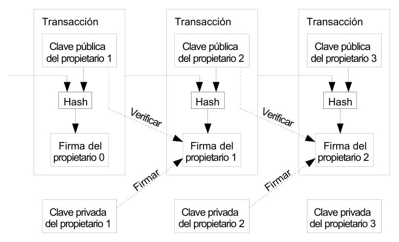
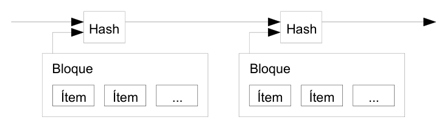
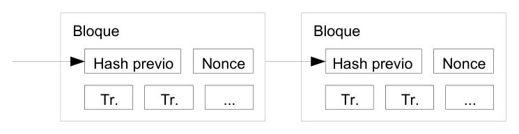
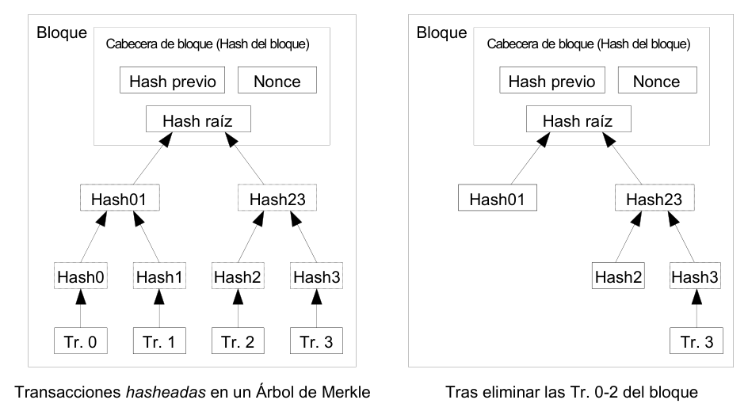
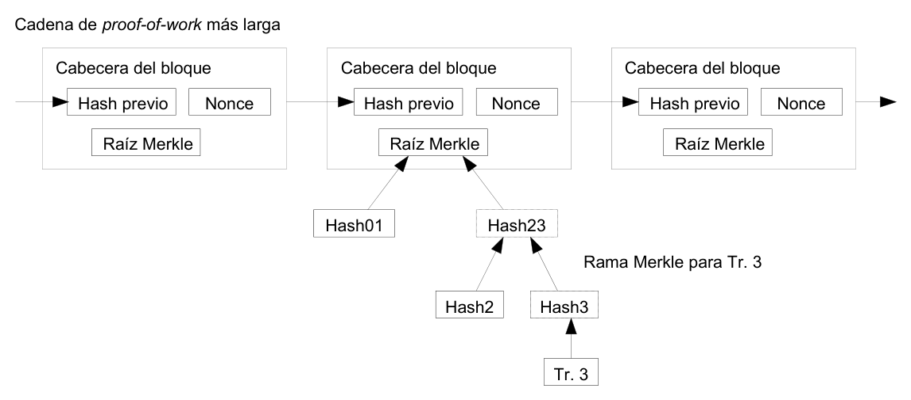
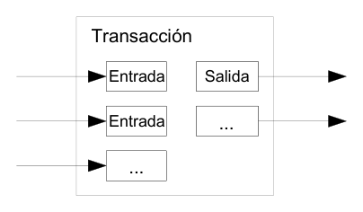
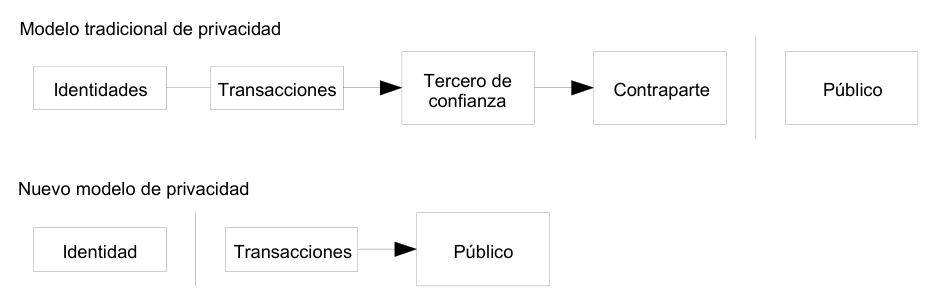

Bitcoin: un sistema de dinero en efectivo electrónico peer-to-peer1
Traducido al español por @breathingdog
Resumen. Una forma de dinero en efectivo electrónico puramente peer-to-peer debería permitir enviar pagos online directamente entre las partes y sin pasar a través de una institución financiera. Las firmas digitales son parte de la solución, pero los beneficios principales desaparecen si un tercero de confianza sigue siendo imprescindible para prevenir el doble gasto. Proponemos una solución para el problema del doble gasto usando una red peer-to-peer. La red sella las transacciones en el tiempo en una cadena continua de proof-of-work2 basada en hash3, estableciendo un registro que no se puede modificar sin rehacer la proof-of-work. La cadena más larga no solo sirve de prueba efectiva de la secuencia de eventos, sino que también demuestra que procede del conjunto de CPU más potente. Mientras la mayoría de la potencia CPU esté controlada por nodos que no cooperen para atacar la propia red, se generará la cadena más larga y se aventajará a los atacantes. La red en sí misma precisa de una estructura mínima. Los mensajes se transmiten en base a "mejor esfuerzo"4, y los nodos pueden abandonar la red y regresar a ella a voluntad, aceptando la cadena proof-of-work más larga como prueba de lo que ha sucedido durante su ausencia.
1. Introducción
El comercio en Internet ha llegado a depender casi exclusivamente de las instituciones financieras como terceros de confianza en el proceso de los pagos electrónicos. A pesar de que el sistema funciona suficientemente bien en la mayor parte de las transacciones, sufre la debilidad inherente al modelo basado en confianza. Las transacciones completamente irreversibles no son posibles debido a que las instituciones financieras no pueden evitar mediar en las disputas. El coste de esta mediación incrementa los costes de transacción, limitando su tamaño mínimo útil y eliminando la posibilidad de realizar pequeñas transacciones ocasionales, y hay un coste mayor al perderse la posibilidad de hacer transacciones irreversibles para servicios irreversibles. Con la posibilidad de ser reversible, la necesidad de confianza crece. Los comerciantes deben tener precaución con sus clientes, solicitándoles más datos de los que de otra forma serían necesarios. Se acepta como inevitable un cierto porcentaje de fraude. Esos costes y la incertidumbre en los pagos se pueden evitar cuando se usa dinero físico en persona, pero no existe mecanismo que permita realizar pagos a través de un canal de comunicación sin la participación de un tercero de confianza.
Es necesario, por tanto, un sistema de pago electrónico basado en prueba criptográfica en lugar de confianza, permitiendo que dos partes interesadas realicen transacciones directamente entre ellas, sin necesidad de un tercero de confianza. Si las transacciones son computacionalmente imposibles de revertir, protegerán a los vendedores del fraude, y cualquier mecanismo de depósito de garantía se puede implementar fácilmente para proteger al comprador. En este documento proponemos una solución al problema del doble gasto usando un servidor de sellado de tiempo, distribuido y peer-to-peer, para generar la prueba computacional del orden cronológico de las transacciones. El sistema es seguro mientras los nodos honestos controlen colectivamente más potencia CPU que cualquier grupo cooperante de nodos atacantes.
2. Transacciones
Definimos una moneda electrónica como una cadena de firmas digitales. Cada propietario transfiere la moneda al siguiente propietario firmando digitalmente un hash de la transacción previa y la clave pública del siguiente propietario, y añadiendo ambos al final de la moneda. El beneficiario puede verificar las firmas para verificar la cadena de propiedad.

El problema, por supuesto, es que el beneficiario no puede verificar que uno de los propietarios no haya gastado dos veces la misma moneda. La solución habitual es introducir una autoridad central de confianza, o casa de la moneda, que comprueba cada transacción para que eso no se produzca. Tras cada transacción, la moneda debe regresar a la casa de la moneda para distribuir una nueva moneda, y solo las monedas emitidas directamente desde ella están libres de la sospecha de doble gasto. El problema de esta solución es que el destino de todo el sistema de dinero depende de la compañía que gestiona la casa de la moneda, por la cual pasa cada transacción, igual que un banco.
Necesitamos una forma de que el beneficiario sepa que los propietarios previos no han firmado transacciones anteriores. Para nuestros propósitos, la transacción más temprana es la que cuenta, así que no nos preocupamos de los intentos de doble gasto posteriores. La única manera de confirmar la ausencia de una transacción es tener conocimiento de todas las transacciones. En el modelo de la casa de la moneda, esta tiene conocimiento de todas las transacciones y decide cuáles llegaron primero. Para lograr esto sin la participación de una parte de confianza, las transacciones han de ser anunciadas públicamente [1], y necesitamos un sistema para que los participantes estén de acuerdo en un único historial del orden en que fueron recibidas. El beneficiario necesita prueba de que en el momento de la transacción la mayor parte de los nodos estaban de acuerdo en que esa fue la primera que se recibió.
3. Servidor de sellado de tiempo
La solución que proponemos comienza con un servidor de sellado de tiempo. Un servidor de sellado de tiempo trabaja tomando el hash de un bloque de ítems para sellarlos en el tiempo y notificar públicamente su hash, como un periódico o un post Usenet [2-5]. El sellado de tiempo prueba que los datos han existido en el tiempo, obviamente, para entrar en el hash. Cada sellado de tiempo incluye el sellado de tiempo previo en su hash, formando una cadena, con cada sellado de tiempo adicional reforzando al que estaba antes.

4. Proof-of-work
Para implementar un servidor de sellado de tiempo distribuido de forma peer-to-peer, necesitaremos emplear un sistema de proof-of-work similar al Hashcash de Adam Back [6], más que al de los periódicos o los post Usenet. La proof-of-work consiste en escanear en busca de un valor que cuando fue hasheado, al igual que con SHA-256, el hash comience con un número de cero bits. El trabajo medio que hace falta es exponencial en el número de cero bits requeridos y puede verificarse ejecutando un único hash.
Para nuestra red de sellado de tiempo, implementamos la proof-of-work incrementando un nonce5 en el bloque hasta que se encuentre un valor que dé al hash del bloque los cero bits requeridos. Una vez que se ha agotado el esfuerzo de CPU para satisfacer la proof-of-work, el bloque no se puede cambiar sin rehacer el trabajo. A medida que bloques posteriores se encadenen tras él, el trabajo para cambiar un bloque incluiría rehacer todos los bloques siguientes.

La proof-of-work también resuelve el problema de determinar la representación en la toma de decisiones mayoritarias. Si la mayoría estuviera basada en un voto por IP, podría subvertirse por cualquiera capaz de asignar muchas IPs. La proof-of-work es esencialmente un voto por CPU. La decisión de la mayoría está representada por la cadena más larga, en la cual se ha invertido el mayor esfuerzo de proof-of-work. Si la mayoría de la potencia CPU está controlada por nodos honestos, la cadena honesta crecerá más rápido y dejará atrás cualquier cadena que compita. Para modificar un bloque pasado, un atacante tendría que rehacer la proof-of-work del bloque y de todos los bloques posteriores, y entonces alcanzar el trabajo de los nodos honestos. Demostraremos más adelante que la probabilidad de que un atacante más lento los alcance, disminuye exponencialmente a medida que se añaden bloques posteriores.
Para compensar el aumento en la velocidad del hardware y el interés variable de los nodos activos a lo largo del tiempo, la dificultad de la proof-of-work está determinada por una media móvil que apunta a un número medio de bloques por hora. Si se generan muy deprisa, la dificultad aumenta.
5. Red
Los pasos para ejecutar la red son los siguientes:
1) Las transacciones nuevas se transmiten a todos los nodos. 2) Cada nodo recoge todas las transacciones en un bloque. 3) Cada nodo trabaja en resolver una proof-of-work compleja para su bloque. 4) Cuando un nodo resuelve una proof-of-work, transmite el bloque a todos los nodos. 5) Los nodos aceptan el bloque si todas las transacciones en él son válidas y no se han
gastado con anterioridad. 6) Los nodos expresan su aceptación del bloque al trabajar en crear el siguiente bloque en la
cadena, usando el hash del bloque aceptado como hash previo.
Los nodos siempre consideran correcta a la cadena más larga y se mantendrán trabajando para extenderla. Si dos nodos transmiten simultáneamente diferentes versiones del siguiente bloque, algunos nodos recibirán una antes que la otra. En ese caso, trabajarán sobre la primera que hayan recibido, pero guardarán la otra ramificación por si acaso se convierte en la más larga. El empate se romperá cuando se encuentre la siguiente proof-of-work y una ramificación se convierta en la más larga; los nodos que trabajaban en la otra ramificación cambiarán automáticamente a la más larga.
La transmisión de nuevas transacciones no precisa alcanzar todos los nodos. Con alcanzar a la mayoría de los nodos, entrarán en un bloque en poco tiempo. Las transmisiones de nodos también toleran mensajes perdidos. Si un nodo no recibe un bloque, lo reclamará cuando reciba el siguiente bloque y se dé cuenta de que falta uno.
6. Incentivo
Por convención, la primera transacción en un bloque es una transacción especial con la que comienza una moneda nueva, propiedad del creador del bloque. Esto añade un incentivo a los nodos para soportar la red, y proporciona una forma de poner las monedas en circulación, dado que no hay autoridad central que las distribuya. La adición estable de una constante de monedas nuevas es análoga a los mineros de oro que consumen recursos para añadir oro a la circulación. En nuestro caso, es tiempo de CPU y electricidad lo que se gasta.
El incentivo también se basa en las comisiones por transacción. Si el valor de salida de una transacción es menor que el valor de entrada, la diferencia es una comisión por transacción que se añade al valor de incentivo del bloque que contiene la transacción. Una vez que un número predeterminado de monedas ha entrado en circulación, el incentivo puede evolucionar hacia comisiones de transacción y estar completamente libre de inflación.
El incentivo puede ayudar a que los nodos permanezcan honestos. Si un atacante codicioso fuera capaz de reunir más potencia CPU que la de todos los nodos honestos, tendría que escoger entre usarla para defraudar a la gente robándoles los pagos recibidos, o usarla para generar nuevas monedas. Debe encontrar más rentable respetar las reglas, esas reglas que le favorecen entregándole más monedas nuevas que a todos los demás en conjunto, que socavar el sistema y la validez de su propia riqueza.
7. Recuperación de espacio de disco
Cuando la última transacción de una moneda está enterrada bajo suficientes bloques, las transacciones que se han gastado antes que ella se pueden descartar para ahorrar espacio de disco. Para facilitar esto sin romper el hash del bloque, las transacciones son hasheadas en un Árbol de Merkle [7][2][5], incluyendo solo la raíz en el hash del bloque. Los bloques viejos pueden compactarse podando ramas del árbol. Los hashes interiores no necesitan ser guardados.

Una cabecera de bloque sin transacciones pesaría unos 80 bytes. Si suponemos que los bloques se generan cada 10 minutos, 80 bytes × 6 × 24 × 365 = 4.2MB por año. Siendo habitual la venta de ordenadores con 2GB de RAM en 2008, y con la Ley de Moore prediciendo un crecimiento de 1.2GB anual, el almacenamiento no debería suponer un problema incluso si hubiera que conservar en la memoria las cabeceras de bloque.
8. Verificación de pagos simplificada
Es posible verificar pagos sin ejecutar un nodo plenamente en red. El usuario solo necesita tener una copia de las cabeceras de bloque de la cadena más larga de proof-of-work, que puede conseguir solicitándola a los nodos de red hasta estar convencido de que tiene la cadena más larga, y obtener la rama Merkle que enlaza la transacción con el bloque en que está sellado en el tiempo. El usuario no puede comprobar la transacción por sí mismo pero, al enlazarla a un lugar en la cadena, puede ver que un nodo de la red la ha aceptado, y los bloques añadidos posteriormente confirman además que la red la ha aceptado.

Como tal, la verificación es fiable en tanto que los nodos honestos controlen la red, pero es más vulnerable si un atacante domina la red. Mientras que los nodos de red pueden verificar las transacciones por sí mismos, el método simplificado puede ser engañado por transacciones fabricadas por un atacante, en tanto el atacante pueda continuar dominando la red. Una estrategia para protegerse contra esto podría ser aceptar alertas de los nodos de red cuando detecten un bloque no válido, sugiriendo al software del usuario que descargue el bloque entero y las transacciones con aviso para confirmar la inconsistencia. Los negocios que reciban pagos con frecuencia seguramente preferirán tener sus propios nodos ejecutándose para tener más seguridad independiente y verificación más rápida.
9. Combinando y dividiendo valor
Aunque sería posible manipular monedas individualmente, no sería manejable hacer una transacción para cada céntimo en una transferencia. Para permitir que el valor se divida y combine, las transacciones contienen múltiples entradas y salidas. Normalmente habrá, o bien una entrada simple de una transacción anterior mayor, o bien múltiples entradas combinando pequeñas cantidades, y como máximo dos salidas: una para el pago y otra devolviendo el cambio, si lo hubiera, al emisor.

Cabe señalar que la diseminación de control6, donde una transacción depende de varias transacciones, y esas transacciones dependen de muchas más, no supone aquí un problema. No existe la necesidad de extraer una copia completa e independiente del historial de una transacción.
10. Privacidad
El modelo tradicional de banca consigue un nivel de privacidad limitando el acceso a la información a las partes implicadas y el tercero de confianza. La necesidad de anunciar públicamente todas las transacciones excluye este método, pero aún así se puede mantener la privacidad rompiendo el flujo de información en otro punto: manteniendo las claves públicas anónimas. El público puede ver que alguien está enviando una cantidad a otro alguien, pero sin que haya información vinculando la transacción con nadie. Esto es similar al nivel de información que comunican las bolsas de valores, donde el tiempo y tamaño de las operaciones individuales, la "cinta", son hechos públicos, pero sin decir quiénes fueron las partes.

Como cortafuegos adicional, debería usarse un nuevo par de claves en cada transacción para evitar que se relacionen con un propietario común. Con las transacciones multientrada será inevitable algún tipo de vinculación, pues revelan necesariamente que sus entradas pertenecieron al mismo propietario. El riesgo es que si se revela la identidad del propietario de una clave, la vinculación podría revelar otras transacciones que pertenecieron al mismo propietario.
11. Cálculos
Consideramos el escenario de un atacante intentando generar una cadena alternativa más rápido que la cadena honesta. Incluso si se consigue, el sistema no queda abierto a cambios arbitrarios como crear valor de la nada o tomar dinero que nunca perteneció al atacante. Los nodos no van a aceptar una transacción inválida como pago y los nodos honestos nunca aceptarán un bloque que las contenga. Un atacante solo puede tratar de cambiar una de sus propias transacciones para recuperar dinero que ha gastado recientemente.
La carrera entre la cadena honesta y la cadena de un atacante puede verse como un paseo aleatorio binomial7. El suceso que prospera es la cadena honesta creciendo un bloque, aumentando su liderato por +1, y el suceso que fracasa es la cadena del atacante creciendo un bloque, reduciendo la brecha en -1.
La probabilidad de que un ataque alcance [la cadena honesta] desde un déficit dado es análoga al problema de la ruina del jugador8. Supongamos que un jugador con crédito ilimitado comienza con un déficit y juega en potencia un número infinito de intentos para alcanzar un punto de equilibrio. Podemos calcular la probabilidad de que alcance ese punto, o de que un ataque alcance alguna vez a la cadena honesta, como sigue [8]:
p = probabilidad de que un nodo honesto encuentre el siguiente bloque
q = probabilidad de que el atacante encuentre el siguiente bloque
qz = probabilidad de que el atacante alcance [la cadena honesta] desde z bloques atrás
Asumiendo que p > q, la probabilidad cae de forma exponencial a medida que aumenta el número de bloques que el atacante tiene que alcanzar. Con las probabilidades en su contra, si no tiene un golpe de suerte que lo haga avanzar desde el principio, sus oportunidades se irán desvaneciendo a medida que se va quedando atrás.
Consideremos ahora cuánto tiempo necesita esperar el receptor de una transacción para tener la suficiente seguridad de que el emisor no puede cambiarla. Asumimos que el emisor es un atacante que quiere que el receptor crea durante un tiempo que le ha pagado; entonces cambiará el pago para devolvérselo a sí mismo un tiempo después. El receptor recibirá un aviso cuando esto suceda, pero el emisor espera que ya sea demasiado tarde.
El receptor genera un nuevo par de claves y da la clave pública al emisor poco antes de firmar. Esto impide que el emisor pueda preparar una cadena de bloques previa trabajando de continuo en ella hasta tener la suerte suficiente como para ponerse a la cabeza y, entonces, ejecutar la transacción. Una vez que la transacción se ha emitido, el emisor deshonesto comienza a trabajar en secreto en una cadena paralela que contiene una versión alternativa de su transacción.
El receptor espera hasta que la transacción se ha añadido al bloque y z bloques se han enlazado tras él. No sabe la cantidad de progreso que ha realizado el atacante, pero asumiendo que los bloques honestos han tomado la media de tiempo esperada por bloque, el potencial de progreso del atacante será una distribución de Poisson9 con un valor esperado:
Para obtener la probabilidad de que el atacante pueda ponerse al día incluso ahora, multiplicamos la densidad de Poisson para cada aumento en el progreso que podría haber realizado, por la probabilidad que podría haber alcanzado desde ese punto:
Reordenándola para evitar sumar la cola infinita de la distribución...
Convertida a lenguaje de programación C...
#include <math.h>
double AttackerSuccessProbability(double q, int z)
{
double p = 1.0 - q;
double lambda = z * (q / p);
double sum = 1.0;
int i, k;
for (k = 0; k <= z; k++)
{
double poisson = exp(-lambda);
for (i = 1; i <= k; i++)
poisson *= lambda / i;
sum -= poisson * (1 - pow(q / p, z - k));
}
return sum;
}Ejecutando algunos resultados, podemos ver que la probabilidad disminuye exponencialmente con z.
q=0.1
z=0 P=1.0000000
z=1 P=0.2045873
z=2 P=0.0509779
z=3 P=0.0131722
z=4 P=0.0034552
z=5 P=0.0009137
z=6 P=0.0002428
z=7 P=0.0000647
z=8 P=0.0000173
z=9 P=0.0000046
z=10 P=0.0000012q=0.3
z=0 P=1.0000000
z=5 P=0.1773523
z=10 P=0.0416605
z=15 P=0.0101008
z=20 P=0.0024804
z=25 P=0.0006132
z=30 P=0.0001522
z=35 P=0.0000379
z=40 P=0.0000095
z=45 P=0.0000024
z=50 P=0.0000006Resolviendo para P menor que 0.1%...
P < 0.001
q=0.10 z=5
q=0.15 z=8
q=0.20 z=11
q=0.25 z=15
q=0.30 z=24
q=0.35 z=41
q=0.40 z=89
q=0.45 z=34012. Conclusión
Hemos propuesto un sistema para realizar transacciones electrónicas sin depender de confianza. Comenzamos con el marco habitual de monedas creadas a partir de firmas digitales, lo cual permite un firme control de la propiedad, pero que está incompleto sin una forma de prevenir el doble gasto. Para resolver esto, hemos propuesto una red peer-to-peer usando proof-of-work para realizar un registro público de las transacciones que rápidamente se hace computacionalmente inviable de cambiar para un atacante si la mayoría de la potencia CPU está controlada por nodos honestos. La red es robusta dada su simplicidad no estructurada. Los nodos trabajan todos a la vez, precisando poca coordinación. No necesitan ser identificados dado que los mensajes no se envían a ningún lugar en particular, y solo necesitan ser emitidos en base a "mejor esfuerzo". Los nodos pueden abandonar y reincorporarse a la red a voluntad, aceptando la cadena proof-of-work como prueba de lo que ha sucedido mientras estaban ausentes. Votan con su potencia CPU, expresando su aceptación de los bloques válidos trabajando en extenderlos y descartando los bloques no válidos al rechazar trabajar en ellos. Cualesquiera reglas e incentivos necesarios pueden ser aplicados con este mecanismo de consenso.
Referencias
- W. Dai, "b-money", http://www.weidai.com/bmoney.txt, 1998.
- H. Massias, X. S. Avila, and J.-J. Quisquater, "Design of a secure timestamping service with minimal trust requirements", en el 20th Symposium on Information Theory in the Benelux, mayo de 1999.
- S. Haber, W. S. Stornetta, "How to time-stamp a digital document", en Journal of Cryptology, vol. 3, n.° 2, pp. 99-111, 1991.
- D. Bayer, S. Haber, W. S. Stornetta, "Improving the efficiency and reliability of digital time-stamping", en Sequences II: Methods in Communication, Security and Computer Science, pp. 329-334, 1993.
- S. Haber, W. S. Stornetta, "Secure names for bit-strings", en Proceedings of the 4th ACM Conference on Computer and Communications Security, pp. 28-35, abril de 1997.
- A. Back, "Hashcash - a denial of service counter-measure", http://www.hashcash.org/papers/hashcash.pdf, 2002.
- R. C. Merkle, "Protocols for public key cryptosystems", en Proc. 1980 Symposium on Security and Privacy, IEEE Computer Society, pp. 122-133, abril de 1980.
- W. Feller, "An introduction to probability theory and its applications", 1957.
N. del T. Para esta traducción se ha respetado la estética del documento original y sus esquemas, así como la tipografía empleada por Satoshi Nakamoto; se ha tratado también de conservar el estilo lingüístico. Algunas expresiones se han mantenido en la lengua original por ser de uso común en lengua española, y se han señalado en cursiva. Las notas en superíndice a enlaces externos no pertenecen al documento original y se han añadido para facilitar su comprensión. La traducción ha sido realizada en Apache OpenOffice, donde se supone que fue escrito el texto original.
@breathingdog
- https://es.wikipedia.org/wiki/Peer-to-peer ↩
- https://es.wikipedia.org/wiki/Prueba_de_trabajo ↩
- https://es.wikipedia.org/wiki/Funci%C3%B3n_hash ↩
- https://es.wikipedia.org/wiki/Entrega_de_mejor_esfuerzo ↩
- https://en.wikipedia.org/wiki/Cryptographic_nonce (en inglés) ↩
- https://es.wikipedia.org/wiki/Dise%C3%B1o_estructurado#Fan-In_y_Fan-Out ↩
- https://es.wikipedia.org/wiki/Camino_aleatorio ↩
- https://en.wikipedia.org/wiki/Gambler%27s_ruin (en inglés) ↩
- https://es.wikipedia.org/wiki/Distribuci%C3%B3n_de_Poisson ↩